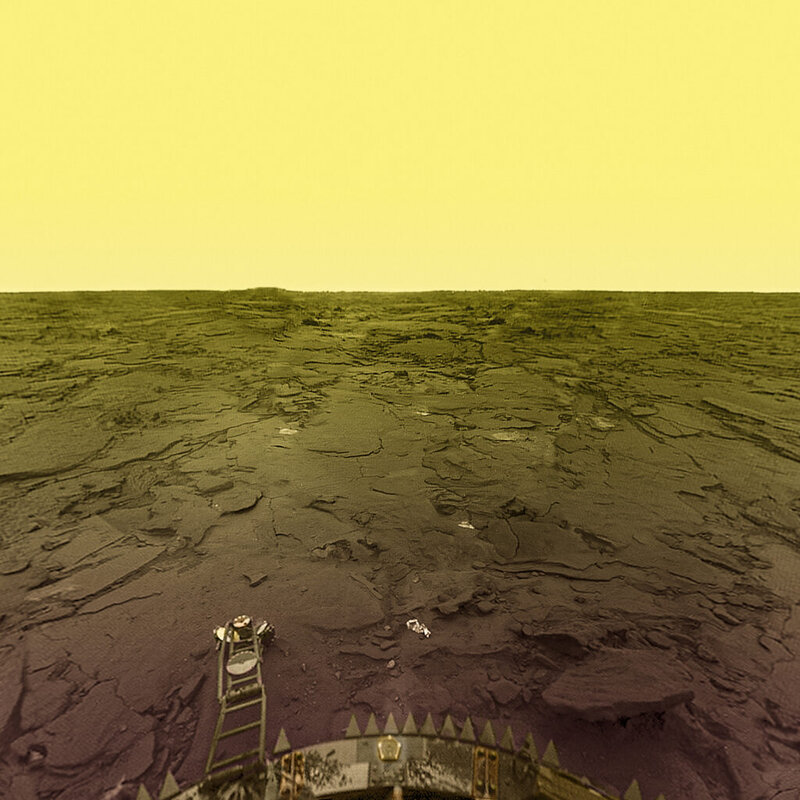

Venus
Venus is ongeveer net zo groot als onze aarde. De planeet is omringd door een dikke laag wolken van
zwavelzuur.
Hierdoor zie je het oppervlakte van de planeet niet vanaf de aarde. Deze wolken zorgen voor een
isolerend effect en hierdoor krijgt de planeet een sterk broeikaseffect.
Hierdoor is het zeer warm op deze planeet, rond de 470 graden.
Water is dus ook onmogelijk hier.
Leven op de planeet kan niet, dit komt door de hoge temperatuur en het feit dat er geen water aanwezig
is.
Ook komt het door het feit dat Venus een enorme druk heeft, wel 90 keer zo hoog als op aarde.
Hierdoor zou een mens samengedrukt worden.
Deze planeet bestaat uit gesteente met in de kern nikkel-ijzer.
De atmosfeer bestaat uit kooldioxide en stikstof.
Het oppervlakte bestaat uit hete woestijnen, grote vlakten en weinig bergen en dalen.
Venus zonder wolken
Feiten van Venus
- Planeettype: Terrestrisch
- Straal: 6051,8 km
- Massa: 4,867×10^24 kg
- Aphelium: 108,939 miljoen km
- Perihelium: 107.476 miljoen km
- Gemiddelde afstand tot de aarde: 261 miljoen km - 40 miljoen km
- Oppervlaktetemperatuur: 438 °C tot 482 °C
- Zonnedaglengte: 116,75 aardse dagen
- Sterrendaglengte: 243.022 aardse dagen
- Jaarlengte: 224.701 aardse dagen
- Leeftijd: 4,503 miljard jaar
- Genoemd naar: de Romeinse godin van liefde en schoonheid
Venus
Mars werd samen met de andere planeten in het zonnestelsel gevormd.
Ongeveer 4,5 miljard jaar geleden stortte een enorme wolk interstellair gas en stof in onder zijn
eigen gewicht om platgedrukt te worden tot een protoplanetaire schijf.
Mars en de andere rotsachtige hemellichamen ontstonden in het binnenste deel van deze schijf,
terwijl de gasreuzen in de buitenste regionen van het jonge zonnestelsel gevormd werden.
Venus is de tweede planeet van de zon; de afstand tot onze ster is iets meer dan 70% van de afstand
tussen de aarde en de zon.
Aangezien de elliptische baan van Venus het minst excentrisch is van alle planeten, is er geen
significant verschil tussen de dichtstbijzijnde (107,4 miljoen km) en verste (108,9 miljoen km)
punten van de zon.
De gemiddelde afstand van Venus van de zon is 108,2 miljoen km
Omdat dikke wolken het oppervlak van Venus verbergen, dachten mensen heel lang dat Venus op de aarde
zou lijken.
Deze nabije planeet is altijd interessant geweest voor wetenschappers en astronomen: meer dan 40
ruimtevaartuigen hebben Venus verkend.
Door haar nabijheid tot onze planeet zal Venus altijd een doel blijven voor toekomstig onderzoek en
reizen.

Oppervlakte van Venus gemaakt door de Venera-13 ruimtevaartuig in 1 maart 1982
Deze foto in valse kleuren werd met ultraviolet licht gemaakt door de Japanse ruimtesonde
Akatsuki.
Hoe kun je Venus zien?
Omdat Venus dichter bij de zon staat dan de aarde, wordt de planeet het grootste deel van de tijd
overschaduwd door de schittering van de zon.
Toch wordt ze op bepaalde momenten zichtbaar voor waarnemers op aarde.
Je kunt Venus het beste bekijken als de planeet haar grootste elongatie bereikt, of, anders gezegd,
haar grootste afstand tot de zon, gezien vanaf de aarde.
De grootste elongaties van Venus vinden ongeveer elke 9 maanden plaats.
De grootste westelijke elongatie wordt ook wel de ochtendelongatie genoemd, omdat Venus in deze
periode helder aan de hemel schijnt voor zonsopkomst — vandaar de naam "ochtendster".
En omgekeerd wordt de oostelijke elongatie ook wel de avondelongatie genoemd, omdat Venus dan na
zonsondergang aan de hemel verschijnt.